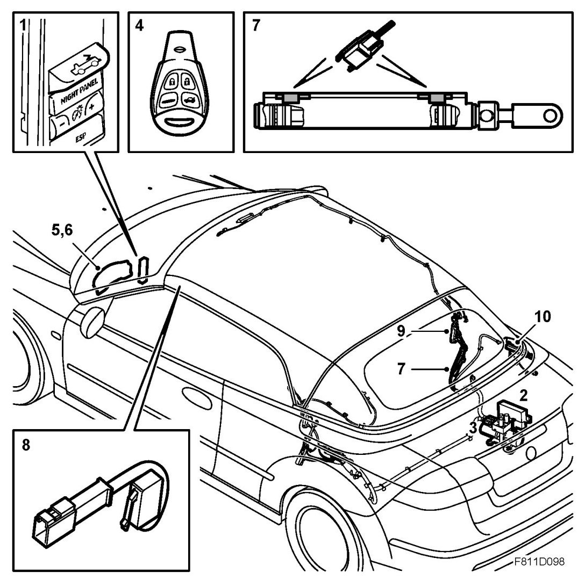
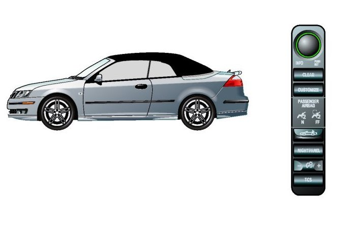

Soft Top Operation, Brief Description
Soft Top Operation, Brief Description
Overview

1. Soft top switch
2. STC control module (Soft Top Controller)
3. Hydraulic unit
4. Remote control
5. MIU
6. SID (Saab Information Display)
7. Hydraulic cylinder, main mechanism with position sensor
8. First bow position sensor (in windscreen frame)
9. Sixth bow hydraulic cylinder
10. Soft top cover hydraulic cylinder
Description
The soft top is opened and closed using a hydraulic unit and seven hydraulic cylinders. The system is operated with a switch on the instrument panel or a remote control. The movement of the soft top is controlled by the STC (Soft Top Controller).
The position the soft top is in is detected by sensors integrated in the hydraulic system, soft top mechanism and windscreen frame. Information from each sensor is received by the STC. The soft top is controlled sequentially, which means that each soft top movement must be completed before the next one can start.
The STC, which controls the pump and valves, must receive confirmation of the various movements from the sensors and switches within a certain time period. When one such condition is not fulfilled, all movement will cease and STC will generate an error message sent via the bus and shown on SID (Saab Information Display).
The hydraulic unit, which is mounted in the right-hand side of the luggage compartment, comprises an electric hydraulic pump and a valve block. The hydraulic valves are located in the valve block and control the flow of fluid to the hydraulic cylinders.
There is no pressure in the system when the soft top is completely closed or completely open. When the ignition is turned off, the pump will stop and the valves will return to their positions of rest. If work is being carried out with the soft top half raised, it must always be secured with a support to prevent it falling down.
The soft top mechanism and soft top cover can be operated in emergencies to enable manual closing in case of a failure in the electric-hydraulic system.
Soft top sequences, opening and closing of soft top, hydraulic functions

The following description explains how the hydraulic system works when opening and closing the soft top.
Opening
Step 1, opening the sixth bow
When the button for soft top operation is maneuvered, STC (Soft Top Control) receives a command to lower the top.
Step 2, releasing first bow and opening soft top cover
The first bow latch is released and the soft top cover is opened.
Step 3, sixth bow, intermediate position
Sixth bow is in intermediate position.
Step 4, lowering the soft top
The soft top is lowered into the soft top storage.
Step 5, locking the soft top cover
The first bow is secured and the soft top cover is closed and locked.
Closing
Step 1, opening the soft top cover
The latch for the first bow is released and the soft top cover is opened.
Step 2, raising the soft top
The soft top is raised.
Step 3, opening the sixth bow
The sixth bow is raised.
Step 4, locking the first bow and closing the soft top cover
The first bow latch is secured and the soft top is closed.
Step 5, closing the sixth bow
The sixth bow is lowered to the soft top cover.